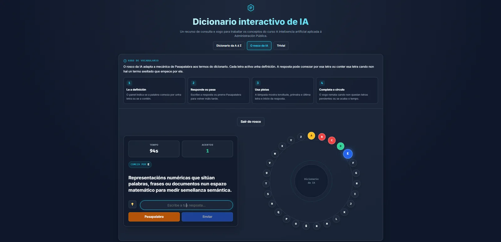
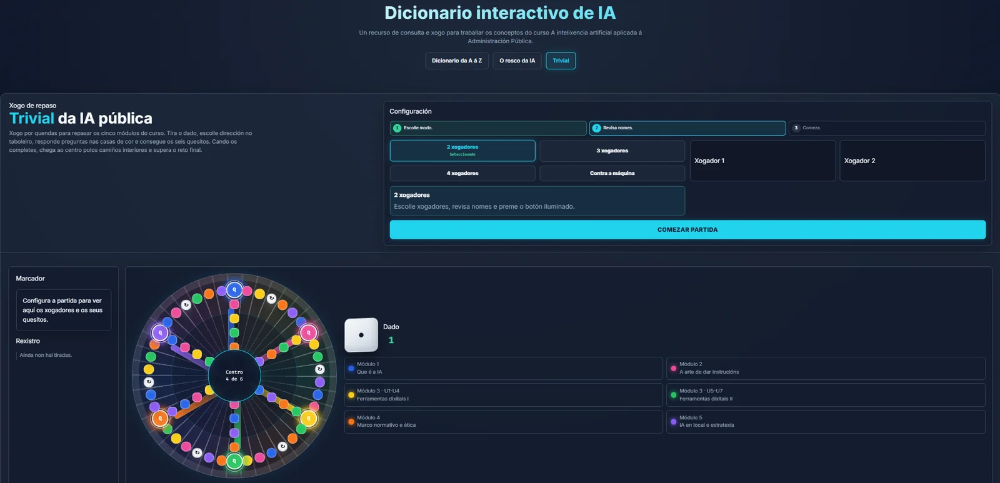

Qué es la IA y cómo llegó a nuestro trabajo
Conceptos, mitos, alucinaciones, verificación y primeros usos.
Curso online · 30 horas · junio de 2026
Diseño completo para empleados públicos locales con niveles de partida diferentes. El itinerario conecta conceptos, herramientas, responsabilidad, modelos locales y gobernanza.

Arquitectura del curso
El curso y las muestras se presentan en gallego, idioma oficial de la acción formativa. La estructura y los recursos son adaptables a otros idiomas.
Conceptos, mitos, alucinaciones, verificación y primeros usos.
Contexto documental, contexto normativo y redacción administrativa.
Gemini, ChatGPT, Claude, NotebookLM y generación multimedia.
Reglamento de IA, protección de datos, supervisión y riesgos.
Entorno local, evaluación de modelos, pilotos y gobernanza.
Evidencias
Las muestras permiten revisar directamente la calidad, variedad metodológica y relación entre contenidos y actividades.
Carga de fuentes, salidas útiles, verificación y límites.
Riesgos, supervisión, alucinaciones y revisión antes de decidir.
Pilotos, inventario, política de uso y decisiones organizativas.
Repaso activo de conceptos y buenas prácticas de la unidad.
Decisiones sobre RIA, protección de datos, sesgos y revisión humana.
Consulta y repaso gamificado para consolidar vocabulario operativo.
Resumen visual de herramientas y criterios de uso.
El mismo cuestionario en HTML para revisión y JSON para reutilización.
Escenarios para decidir pilotos, gobernanza y despliegue responsable.
Gamificación aplicada
El Trivial de IA pública convierte los contenidos de los cinco módulos en una actividad multijugador. El recurso completa el diccionario y el Rosco como sistema de consulta, práctica y consolidación.

Vídeo y transferencia
El alumnado no se limita a ver una demostración: debe producir, verificar y entregar resultados.
Fuentes, resúmenes, preguntas y salidas verificables.
Evaluación
La evaluación combina preguntas, escenarios y prácticas para comprobar cuándo usar IA, cómo verificar resultados y qué límites respetar.
Conceptos y detección temprana de dudas.
Aplicación de criterios técnicos y normativos.
Resultados producidos con herramientas reales.
La estructura puede ajustarse a otros perfiles, sectores, duraciones, herramientas e idiomas. Para preparar una propuesta basta con indicar destinatarios, objetivos y modalidad.